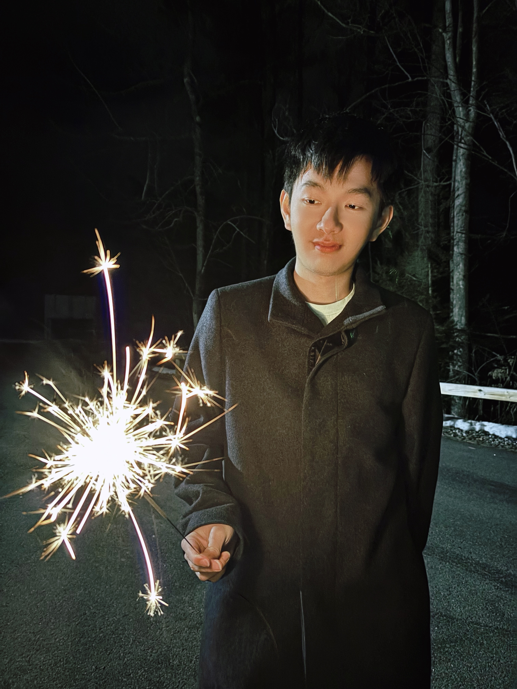

Hi, I’m Vincent (Zequn) Chen.
PhD Student in Statistics and Machine Learning at Dartmouth College
I am a PhD student at Dartmouth College, working at the intersection of statistical machine learning, reinforcement learning, healthcare AI, and large language model agents.
My research focuses on developing reliable and interpretable AI systems for decision-making problems, with applications in healthcare, fairness-aware reinforcement learning, and agentic AI workflows.
I have industry experience in applied machine learning and data science, including internship work on LLM-powered feature extraction, recommendation systems, and scalable AI pipelines.
Outside of research, I enjoy exploring new technologies, writing technical articles, reading, and stock investment.
Updates
I accepted an Applied Scientist Internship offer at Amazon, where I will work on machine learning and LLM-powered abuse prevention project.
I developed an LLM-enhanced machine learning pipeline that uses large language models to extract structured features from unstructured text and improve tabular prediction performance.
Our paper "A Hierarchical Bayesian Approach for Predictive Analytics of Depression Severity in Medical Students" has been published in Healthcare Analytics!
Our paper "A survey on optimization and machine learning-based fair decision making in healthcare" has been published in Health Care Management Science!
Research
Fair Distributional Reinforcement Learning
This project studies distributional reinforcement learning methods for improving stability, fairness, and robustness in sequential decision-making. The work is motivated by healthcare applications where both expected outcomes and outcome distributions matter.
Fair Multi-Armed Bandits for LLM Systems
This project investigates fairness-aware multi-armed bandit algorithms for LLM-powered decision systems. The goal is to balance reward optimization with fairness constraints under adaptive user representations.
LLMs as Feature Engineers for Tabular ML
This project studies how large language models can improve traditional machine learning pipelines by extracting structured signals from unstructured context. The extracted features are then used by models such as XGBoost for tabular prediction tasks.